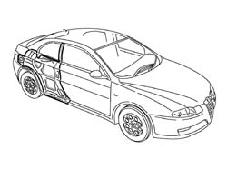
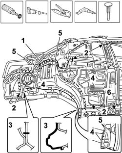
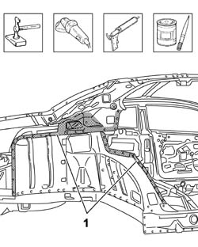
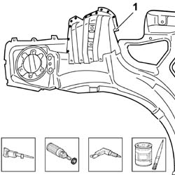
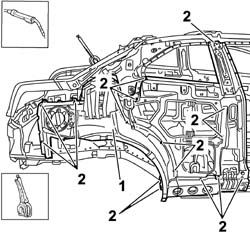
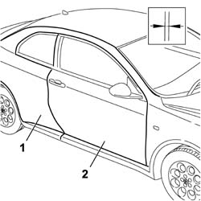
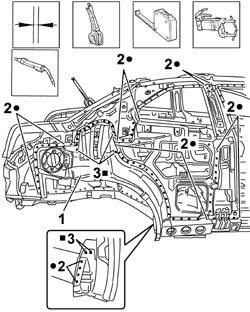
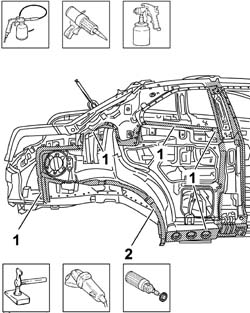

7210B45 REAR WING REINFORCEMENT
- Path
- Procedures > 72 PANELS AND FRAME > 7210 REMOVING REFITTING > 7210B STRUCTURE ELEMENTS-CENTRAL AND REAR PART > 7210B45 REAR WING REINFORCEMENT
- Kind
- repair procedure (removal / refitting; the operation number is the code)
- Applies to
- all engines; all production periods
- Interactive page
- https://sloeber94.github.io/elrnDB-aGt/en/#/125002042
Applies to: all engines; all production periods
 Removing
Removing
 Refitting
Refitting- Op. 7210E56 TAIL-GATE
- Op. 7210E28 ROOF PANEL
- Op. 7210E34 ROOF PANEL/SIDE PANEL CONNECTION PROFILE-MOULDING
- Op. 7210E52 REAR WING (1), LH OR RH
- Op. 7210B10 TAIL LIGHT SEAT
- Check that the components connected are not distorted by checking the bodyshell alignment measurements using suitable equipment (gauges, templates or jigs).
- Straighten the body as necessary.

Applies to: all engines; all production periods
- Use the rotary brush to clean the edges of the panel to highlight the spot welds.
- Use the hack sawing machine following the cutting line illustrated.
- Sections representing the cutting points in order to allow the operator to adjust the position and the depth of the cut so as not to damage the panels underneath.
- Use the chamfering machine on the spot welds shown.
- Use the drill and chamfer the spot welds in the areas shown in the diagram.
- Use the hammer and chisel to remove the spot welds chamfered previously.
6. Remove the edges of the rear outer wheel arch.

Applies to: all engines; all production periods
- Straighten the edges of the panel using a hammer and dolly block.
- Remove the spot weld residues using a disc grinder.
- Use a rotary brush and clean the areas treated previously.
- Apply electro-galvanizing paint.

Applies to: all engines; all production periods
- Working at the bench and drill the replacement panel at the points indicated using the drill.
- Remove the anti-corrosion treatment from the entire perimeter of the inner and outer parts of the replacement part using the rotary brush.
- Apply the electro-galvanizing paint to the edges treated previously.

Applies to: all engines; all production periods
Refitting
Removing- Position the rear frame correctly on the vehicle using self-locking clamps.
- Tack the replacement part by making several spot welds.

Applies to: all engines; all production periods
- Position the centre pillar and the roof connector.
- Position the rear wing.
- Fit the front door.
- Check the alignment and the surrounding gaps, then remove the door and the rear wing.

Applies to: all engines; all production periods
- Check that the alignment of the rear wing frame is perfect.
- Use a spot welder and carry out the welding in the areas shown in the diagram.
- Use a MIG welder and fill the openings made previously.

Applies to: all engines; all production periods
- Correct any distortions to the panel using a hammer and dolly block.
1. Level the welds using a disc grinder.
- Use a rotary brush and clean the areas welded previously.
- Apply the anti-oxidant protection to the areas involved in the welding.
- Seal the join lines between the replacement part and the vehicle.
- Proceed with the painting stage.
2. Apply the wax-based oil protection to the inside of the wheel arch.

Applies to: all engines; all production periods
Topics linked from this page (5)
- 7210B10 TAIL LIGHT SEAT
- 7210E28 ROOF PANEL
- 7210E34 ROOF PANEL/SIDE PANEL CONNECTION PROFILE-MOULDING
- 7210E52 REAR WING (1), LH OR RH
- 7210E56 TAIL-GATE